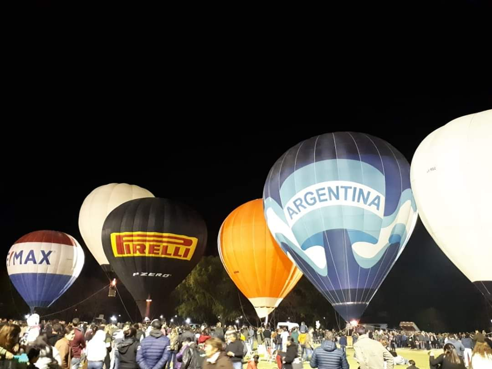

Campaña

Festejando el 25 de mayo acompañamos el despegue del globo "Argentina" en San Antonio de Areco !
Night Glow - Noche de Globos con un fin benéfico!!! El próximo sábado 21 en el Museo Aeronautico los niños pueden llevar su carta a Papá Noel!!!
Dia de la patria, entre todos en el polideportivo municipal de Areco.
Institucional
La Asociación Aerostática Argentina, Asociación Civil (AAA) con domicilio legal en la ciudad de Buenos Aires, constituida el 22 de Noviembre de 1986, es una asociación argentina civil sin fines de lucro, creada para las siguientes finalidades
Misión
a) Agrupar a las personas, sin distinción alguna, interesadas en promover la actividad de la aerostación, sea ello en el plano del pilotaje, el deportivo, el técnico, el fabril, sin que esta enumeración sea en modo alguno limitativa.
b) Vincular a la entidad y a sus socios, con las entidades nacionales e internacionales especializadas similares.
c) Facilitar a sus asociados el acceso a la practica de la aerostación y a las fuentes de información especifica.
d) Propender al perfeccionamiento de sus asociados y de la actividad aerostática en general, mediante la realización de cursos, seminarios, creando la biblioteca especializad y todo otro medio que se juzgue conveniente.
e) Propender mediante el otorgamiento de premios y distinciones, a través de adecuados concursos, al progreso de la ciencia aeroespacial y dentro de ella al mejoramiento de productos y sistemas vinculados a la industria, al comercio y el deporte aeronáutico.
f) Gestionar la representación – cuando corresponda – ante los organismos nacionales y/o internacionales especializados, de la actividad aerostática argentina.
g) La Asociación podrá encarar la realización de otra acción no definida en los incisos anteriores, mientras ella concuerde con los fines generales de su creación y con su objeto social.
Historia
La actividad aeronáutica registra en nuestro país una trayectoria que supera en mucho el siglo pasado. Ya en los años de nuestra independencia, más concretamente en el pronunciamiento de mayo, 1810, Miguel de Colombisse, relojero de origen holandés, se dirigió a la Junta Provisional Gubernativa, desde su residencia en Mendoza, solicitándole la suma de cuatro mil pesos para la construcción de un aeróstato, rígido, impulsado por remos y dirigido por un timón. La solicitud recibida por la Junta fue rechazada ya que en virtud de las urgencias militares del momento, no era posible acceder a ella.
Las primeras experiencias aeronáuticas en la Republica Argentina tienen lugar entre 1864 y 1907. Consisten en demostraciones aerostáticas en globo libre, generalmente sobre el Río de la Plata, realizadas por antiguos integrantes de unidades militares de globos de Europa y de los EE.UU. arribados al país con posterioridad a su desmovilización. Las exhibiciones comienzan al finalizar las guerras de Crimea y de Secesión norteamericanas, luego de localizarse en un predio localizado en Retiro la primera usina de la compañía primitiva de Gas, fundada en 1853, facilitándose de esta forma el inflado de los globos.
Según noticias de la época, llegan el francés Lartet y el aeronauta norteamericano Wells llega a Buenos Aires en 1864, introduciendo el globo de gas bautizado “Buenos Aires”, con el frustrado proyecto de efectuar el cruce de la Cordillera de los Andes, despegando de Mendoza hasta Santiago de Chile. Wells realiza una ascensión desde la Plaza de la Victoria, actual Plaza de Mayo, con el propósito de arrojarse al espacio en un paracaídas colgado en la barquilla. En el momento en que el aeróstato es liberado un espectador se enreda en las amarras y es elevado. Para evitar el peligro de una fatal caída Wells procede a efectuar un descenso de emergencia en el Río de la Plata donde ambos son rescatados por boteros. El incidente concluye con la pérdida del globo y las expectativas de Wells. Puede considerarse esta ascensión como la primera realizada en el territorio nacional.
Pero la Guerra de la Triple Alianza, inició entre nosotros la Aerostación Militar, así fue como en el año 1866, el 6 de julio, un aeróstato cautivo del Ejército Brasileño, se elevó sobre las líneas aliadas para observar las posiciones de la artillería paraguaya, llevando a bordo al Ingeniero polaco Roberto A. Chodasiewiecz (incorporado al Ejército argentino con el grado de Capitán) que se constituyó así en el primer militar argentino y latinoamericano en elevarse en globo.
El 23 de Mayo de 1869 el aeronauta francés Baraille, despega de la Plaza de la Victoria, en una exhibición que forma parte de los festejos del aniversario de la Revolución de Mayo. Por circunstancias que se desconocen su globo cae en el Río de la Plata, ordenando la capitanía del puerto el rescate mediante el envío de una lancha al mando del capitán A.Castello, rescate al que se agregó el vapor de excursión Cavour del capitán Lavarello.
En 1907 el Dr. José Figueroa Alcorta gobierna la Nación. Durante este período Aarón de Anchorena, secretario de la Legación Argentina en Francia, es invitado por el Ing. Santos Dumont a una ascensión en globo libre. La experiencia resulta estimulante para el funcionario argentino quien de inmediato se asocia al Aeroclub de Francia y adquiere un aeróstato de 1200 m3 al que bautiza El Pampero. En 1907 introduce el aeróstato en nuestro país con la finalidad de interesar en tal deporte a sus amistades y a los ministros de Guerra y Marina.
Uno de sus amigos es el ingeniero Jorge Alejandro Newbery, director de alumbrado de la ciudad de Bs. As.; otro es el barón Antonio de Marchi, fundador de la Sociedad Sportiva Argentina (hoy Campo de Polo) desde donde el 25 de diciembre despegaron Anchorena y Newbery en el primer cruce del Río de la Plata, descendiendo a 7 Km. de la costa en la R.O. del Uruguay (Conchillas) . Tal fue el entusiasmo producido por el hecho que el 13 de enero de 1908 Anchorena funda el Aeroclub Argentino que sería durante largos años la institución rectora de la Aeronáutica Nacional, pese a su carácter privado y deportivo.
Sus autoridades Aarón de Anchorena (Presidente), Arturo Luisoni (vicepresidente) y Jorge Newbery (vicepresidente segundo) unieron a todos los entusiastas del “más liviano que el aire”, entre otros Eduardo Newbery, Horacio Anasagasti, Alberto Mascias, Antonio de Marchi y Carlos Hirmscher.
El 17 de octubre de 1908 se eleva por última vez desde la quinta Los Ombúes en el barrio de Belgrano, Eduardo Newbery y el sargento primero Romero realizaría un raid nocturno, nunca volvería a saberse nada del Pampero ni de sus tripulantes que fueron vistos por última vez sobre la localidad de El Palomar y encontrándose restos en Moreno.
Estos intrépidos tripulantes se convertirían en los primeros mártires de la naciente aeronáutica. La angustia fue tanta y sumada la falta de un aeróstato que se disuelve provisoriamente el Aeroclub Argentino.
En enero de 1909, más precisamente el 24 se consigue el aeróstato Patriota adquirido en Francia por el Ingeniero Horacio Anasagasti y se reanuda la actividad del aeroclub, sumando luego varios aeróstatos más, El Huracán, Cóndor, Argentina, Centenario, Los Andes y otros.